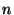
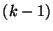
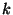

One good test of whether a new version of the compiler is working properly is to see if it compiles to a fixed point. For this, the compiler is compiled  times with the result of the st compilation being responsible for compiling the th version. A fixed point is reached if two consecutive compilations produce identical results.
The fixpt script automates the task of compiling to a fixed
point. It internally uses the sml command for the first
compilation and the makeml script with its -rebuild
parameter for all subsequent runs. This produces a series of bin-directories
 .bin. arch- os,
.bin. arch- os,
 1.bin. arch- os,
1.bin. arch- os,
 2.bin. arch- os,
and boot-directories
2.bin. arch- os,
and boot-directories
 .boot. arch- os,
.boot. arch- os,
 1.boot. arch- os,
1.boot. arch- os,
 2.boot. arch- os,
where
2.boot. arch- os,
where  is a common ``stem'' that is used for naming the whole series.
is a common ``stem'' that is used for naming the whole series.
The fixpt script accepts the following options:
Failure to reach a fixed point after 2 iterations usually indicates some serious problem within the compiler.